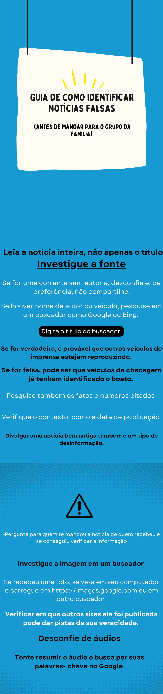

O QUE É FAKE NEWS?
Para mais informações, clique aqui!
Fake News são notícias falsas publicadas por veículos de comunicação como se fossem informações reais. Esse tipo de texto, em sua maior parte, é feito e divulgado com o objetivo de legitimar um ponto de vista ou prejudicar uma pessoa ou grupo (geralmente figuras públicas).
As informações falsas apelam para o emocional do leitor/espectador, fazendo com que as pessoas consumam o material “noticioso” sem confirmar se é verdade seu conteúdo.
REDES SOCIAIS
Para mais informações, clique aqui!
Cerca de 200 informações falsas circulam hoje em dia em celulares e computadores no Brasil. Boa parte delas é disseminada em redes sociais. A Pesquisa Brasileira de Mídia 2016, realizada pela Secretaria Especial de Comunicação Social (Secom) da Presidência da República, revelou que 49% das pessoas se informam pela internet. O cenário atual de proliferação das notícias falsas exige mais educação da população e jornalismo de mais qualidade.
DEEP FAKE
Para mais informações, clique aqui!
O deepfake é uma tecnologia usada para criar vídeos falsos, porém bem realistas, com pessoas fazendo coisas que nunca fizeram de verdade ou em situações que nunca presenciaram. O algoritmo utiliza inteligência artificial para manipular imagens de rostos e criar movimentos, simulando expressões e falas. Assim, trata-se de uma espécie de ilusionismo digital que pode enganar muita gente.
Os 7 tipos de desinformação
Para mais informações, clique aqui!
Os conteúdos e notícias falsas são informações fabricadas para imitar o conteúdo da imprensa/mídia, mas diferentemente de notícias sérias, as desinformações não seguem um padrão. O objetivo não é manipular, é não informar. Dessa forma, não é possível garantir precisão e credibilidade das informações. Para evitar isso, vale se atentar aos tipos de desinformações espalhadas na internet.
